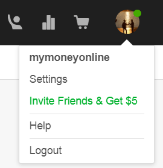

Bezahlte Aufgaben

Klicken Sie auf die Bilder für weitere Informationen.
Wenn Sie einen Service kaufen möchten, geben Sie ihn einfach in die Suchleiste oben ein. Sie können die Suche nach Preis, Lieferfrist, Verkäuferstufe und Ihrer Sprache filtern.

Um dies zu veranschaulichen, haben wir nach Übersetzungsdiensten gesucht, wie Sie sehen, eine Vielzahl von Benutzern, die diesen Dienst zusätzlich zur erworbenen Qualifikation mit der Anzahl der Nutzer, die den Dienst erworben haben, bereitstellen. Erscheint auch der zu zahlende Preis, wenn Sie diesen Service kaufen.
Wenn Sie nun Ihre Dienste anbieten möchten oder was in Fiverr als Gig bezeichnet wird, müssen Sie zuerst auf die Schaltfläche neben der Suchleiste klicken,
Qualität ist wichtiger als Quantität- Steve Jobs
In Fiverr haben Sie drei Möglichkeiten, Ihre Einnahmen abzubestellen. Der erste Schritt erfolgt über ein PayPal-Konto, das einen Bestätigungsprozess durchlaufen muss, um sicherzustellen, dass es sich wirklich um Ihr Konto handelt. Auf diese Weise besteht ein Mindestbetrag für den Abzug, Formular wird durch die Fiverr-Einnahmekarte, die von MasterCard betrieben wird und einen Mindestbetrag von USD 5 für die Auszahlung verlangt, das dritte Formular durch eine Überweisung, für die kein Mindestbetrag im Netz von Fiverr.

Um Ihre Gewinne zurückzuziehen, müssen Sie zum Verkauf gehen oder
Fiverr verwaltet ein System von Empfehlungen, mit denen Sie Ihre Gewinne leicht erhöhen können. Um auf das System von Empfehlungen zuzugreifen, klicken Sie auf das Bild Ihres Profils rechts neben der Seite und wählen Sie die Option, die Sie in grüner Farbe sehen
|  |  |
Sobald das Empfehlungsmodul geöffnet wurde, können Sie Ihren Link auf mehrere Arten teilen: indem Sie ihn an Ihre E-Mail-Kontakte senden, an bestimmte Empfänger senden oder über soziale Netzwerke freigeben. Sobald sich einer Ihrer Freunde registriert und im Internet einen Kauf tätigt, erhalten Sie 5 USD.
Um sich in Fiverr zu registrieren, haben Sie drei Möglichkeiten, eine mit Facebook, eine andere mit Google und die dritte erstellt ein Konto mit Ihrer E-Mail. Wenn Sie sich für die E-Mail entscheiden, müssen Sie Ihre E-Mail schreiben und auf
 |
 |
Wenn also Fiverr interessant zu sein scheint und Sie auf dieser Plattform Gewinne erwirtschaften möchten, lassen wir den nächsten Knopf los, damit Sie sich registrieren und die gewünschten Dienstleistungen zu einem sehr guten Preis kaufen oder kaufen können.
Kann ich für jede Auszahlung eine Zahlungsmethode verwenden?
Nein, für alle von Ihnen getätigten Abhebungen müssen Sie aus Sicherheitsgründen die gleiche Zahlungsmethode verwenden. Wählen Sie daher die erste Zahlung gut aus, da Sie dieselbe Methode verwenden müssen, die Sie für jedes Mal verwenden müssen, wenn Sie Ihre Gewinne abheben möchten.
Sollte ich Studien oder Zeugnisse anbieten?
Nein, in Fiverr müssen Sie kein Profi sein oder ein Zertifikat für den Service oder das Produkt haben, das Sie anbieten werden. Wenn Sie sich keine Sorgen machen, können Sie ein Talent oder eine Ihrer Hobbies sein.
Wie viele Dienste kann ich anbieten?
Die maximale Anzahl von Diensten oder Gigs, die Sie anbieten können, beträgt 20, alles hängt von Ihrer Verfügbarkeit ab. Denken Sie daran, dass je schneller Sie liefern, was Sie anvertraut haben, desto zufriedener bleibt der Käufer und Ihre Qualifikation wird besser.
Was ist der Mindest- und Höchstpreis, den ich in Fiverr berechnen kann?
Viele der Konzerte haben den Mindestpreis von 5 USD, aber einige, abhängig von der Schwierigkeit und Qualität des Produkts oder der Dienstleistung variiert seinen Preis, die meisten nicht über 50 USD, kann 10, 15, 20 oder 25 Dollar kosten, Alle Preise, Technologie- oder Programmieraufträge sind normalerweise die teuersten und erreichen den maximalen Preis, der in Fiverr, 1000 USD, berechnet werden kann.
Gibt mir Fiverr jedes Mal, wenn meine Empfehlung einen Kauf tätigt, 5 USD?
Leider zahlt Fiverr Ihnen zum ersten Mal, wenn Ihre Empfehlung einen Kauf tätigt, nur $ 5, was Sie außerdem dazu motiviert, viele Empfehlungen zu erhalten und mehr und mehr Gewinne zu erzielen.
Ich habe kein PayPal-Konto
Kein Problem, als erstes müssen Sie auf die PayPal-Seite gehen, den Link für Ihre eigene Sicherheit nicht bereitstellen. Dort finden Sie oben die folgenden Optionen:

Hier, nach einem Klick auf

Später werden Sie nach Geschlecht und Geschmack gefragt und danach nach Ihren persönlichen Daten. Sie werden Sie dann fragen, ob Sie Ihre Bankkarte zuordnen möchten, die Sie verschieben können, wenn Sie dies wünschen, indem Sie auf